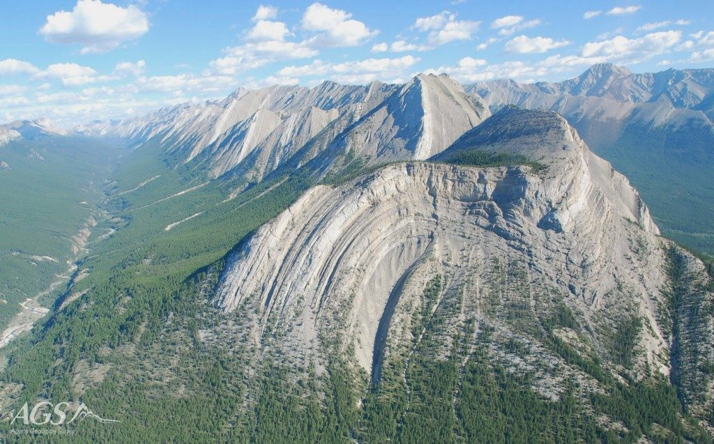
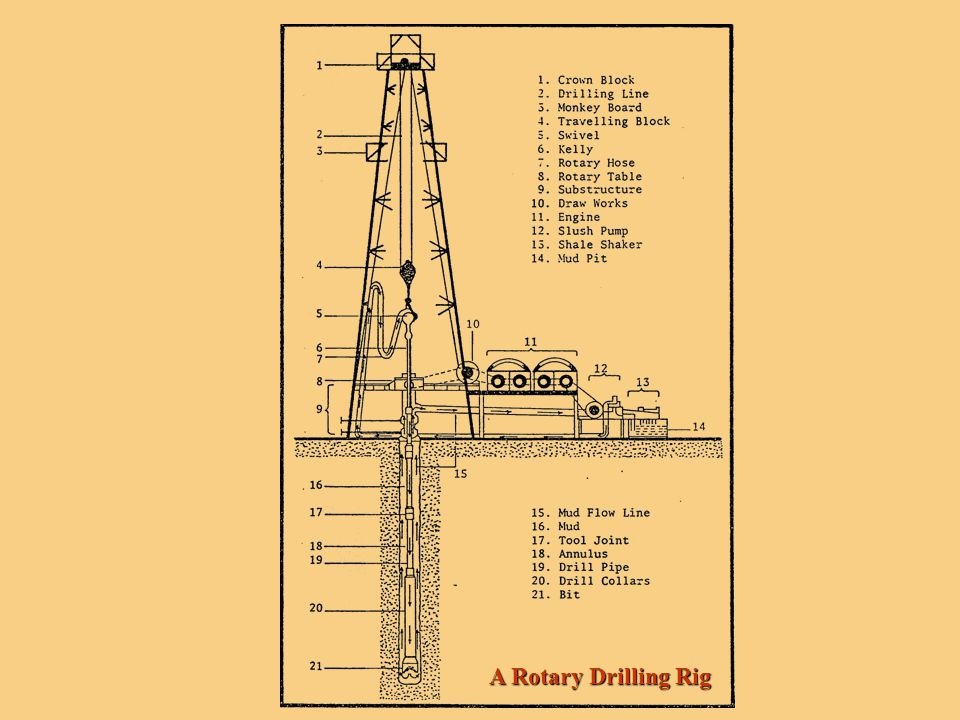
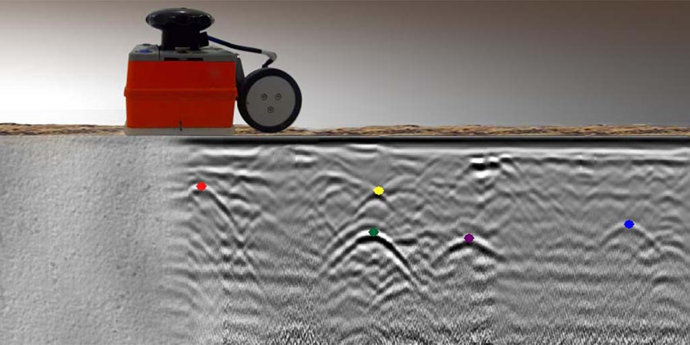
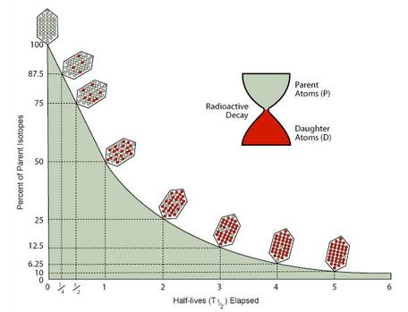
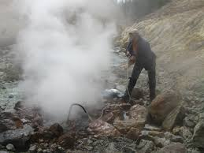

Geological exploration is a complex task that relies on a variety of different scientific disciplines and specialties. While many methods
exist to study the subsurface, below are a selection of different methods that are commonly used to study the subsurface.
Field Methods
The oldest style of geological exploration, this involves physically traversing
the studied terrain, describing and categorizing the various soil and rock outcrops encountered
throughout the study area. Typically, this will also involve the creation of a representative
map placing these units in relation to the topography and prominent features. Important features
such as the strike and dip of rock, fossils encountered in rock, or notable features of a particular
unit such as reactions to hydrochloric acid will be recorded.
Common Field Methods
-
Geological Mapping: Geological Map of the US
-
Geological Drawings: Field sketch of a geological outcrop
-
Outcrop Descriptions: Fieldbook with outcrop notes
-
Geological Sampling: Geologist taking a sample
-
Photography: Photograph of outcrop with geologist as scale
-

Aerial Photography: Aerial photograph showing structural features
-
Microscopy: Rock under microscope with polarized lighting
Satellite Surveys
A modern technique that often falls under the category of Geographic Information Systems (GIS) or Remote Sensing,
satellite surveys are increasingly relied upon by geoscientists and other professionals all around
the world. Satellite methods encompass methods such as LIDAR, aerial imagery, infrared, terrain
modeling, and spectral analysis. Each satellite based method can unveil significant features of the
surface and subsurface that are pertinent to the areas geology.
Common Satellite Methods
-
 LIDAR: Post processed LIDAR image
LIDAR: Post processed LIDAR image
-
RADAR: Detailed RADAR terrain image
-
Spectral Analysis: A river with and without spectral decomposition
-
Aerial Imaging: Strike slip fault satellite image
-
Thermal Imaging: Volcanic body under thermal imaging
-
 Radiometrics: Two dimensional uranium map
Radiometrics: Two dimensional uranium map
-
Stereo Imaging Surveys: Two satellites image one location
Core Drilling
Drilling allows for direct observation of the subsurface by bringing the drilled units to the surface,
whether as cuttings or as intact samples. These allow for detailed descriptions of soil and rock units
along the vertical axis, which would normally be invisible unless exposed by erosion. In addition to
giving direct observations of the soil and rock, drilling allows for data on the subsurfaces' geotechnical
and hydrogeological conditions via sampling and direct measurements.
Common Drilling Sampling Techniques
-

Rotary Drilling: A river with and without spectral decomposition
-
Augering: ATV mounted drill rig using augers
-
Core Sampling: Retrieved rock cores
-
Push Sampling: Sampler being pushed into soil by hand
-
Sonic Drilling: Unprocessed sonic drilling log
-
Hand Digging: Digging a hole by hand
-
Trenching/Test Pits: Trench dug into soil
Geophysical Surveys
Geophysical surveys encompass a wide array of methods that can allow for expansive interpretations of
the subsurface. Seismic, magnetic, and gravity surveys are examples of geophysical methods that allow for
three dimensional observations of the subsurface. Using known values and/or correlations with other methods such
as core drilling, geophysical surveys can allow for rapid exploration of dozens or hundreds of the subsurface.
It can also allow for the rapid and accurate estimation of subsurface resources such as water, petroleum, or ores.
Geophysical methods also have the advantage of being deployable across many platforms and conditions, including
ship based platforms, airborne or satellite based devices, downhole surveys, and ground surveys via
man or vehicle portable devices.
Common Geophysical Methods
-
 Seismic Surveys: Image shows volcano and horizons
Seismic Surveys: Image shows volcano and horizons
-

Ground Penetrating Radar: GPR method and reflection image
-
Resistivity Surveys: Current map during resistivity testing
-
Gravimetric Surveys: Gravimetric map
-
Magnetic Surveys: Magnetic survey map
-
Seismic Tomography: Image of the earth's interior
-
Petrophysical Logging: A series of different petrophysical logs
Geochemical Sampling
A less direct method, geochemical sampling can be an excellent tool to determine detailed conditions of a unit
including its geological history and compositional elements. Important examples of geochemical sampling
environmental protection work such as tracing the movement of chemicals across in the soil or groundwater
or for mining to track mineral deposits across a site so as to maximize recovery.
Common Geochemical Methods
-
 X-Ray Crystallography: Plotted opal attributes
X-Ray Crystallography: Plotted opal attributes
-
Mass Spectrometry: Mass spectrometry process
-
 Electron Microbeaming: Various microbeam images of a sample
Electron Microbeaming: Various microbeam images of a sample
-

Geochronology: Geochonology concept methodology
-
Geothermometry: Minerals on a geothermal plot
-

Gas Sampling: Geologist taking gas sample
-
Micro Imaging: Sample micro image
Geological Modeling and Simulations
Using a combination of all of the above methods, it is possible to create two dimensional and three
dimensional models of a project site. As an example, field mapping and drilling combined will give an exact
representation of the subsurface. Geophysical surveys can fill in the subsurface spaces that can not be directly
observed, allowing for the following of geological structures and lithological contacts. Satellite surveys can allow
for the direct placement of surveyed features on topographically accurate digital maps. Geochemical sampling can then
allow for finding important features such as gold ores in the subsurface. Combined with geophysical methods, this can
allow for prediction and verification of the path a feature or resource might follow in the subsurface. Combined, all
of these methods can help create detailed models of the subsurface and its many attributes.
More than simply creating a representation of the current subsurface, knowledge of the various properties of a given
sites subsurface units can allow for forward and backward modeling of an area. Using known geological principles and models,
it is possible to create detailed histories of an area going back millions of years. It is also possible to predict how an area
might develop over time. Using computer simulations, even more detailed models can be created. Computer simulations also
allow for the rapid testing of different models to determine the validity of a given model for an area.
Common Modeling Techniques
-
3D Modeling: 3D model composed from 2D models
-
2D Modeling: Cross section showing projected geology in 2D
-
Forward Modeling: Propogation of a folded rock in time
-
Reconstruction: Reconstruction of a section to original flat surface
-
Fluid Modeling: Fluid movement along a faulted section
-
Geostatistics: Statistical position model
-
Geotechnical Modeling: Model of soils for construction purposes
Other Geologically Relevant Techniques
While the methods described above are some of the most commonly used techniques, they are by no means an exhaustive list of all possible
techniques. Below a list of other frequently used techniques and methods that may apply in specific situations or in different fields.
Other Techniques
-
 Paleontology: Fossil remains. Useful for dating an area.
Paleontology: Fossil remains. Useful for dating an area.
-
Rock Lab Analysis: Rock core undergoing compressive test
-
Telluric Survey: Cross section showing telluric survey results
-
Hydroprobing: Hydroprobe machine in operation
-
Hydrovacing: Hydrovac machine in operation